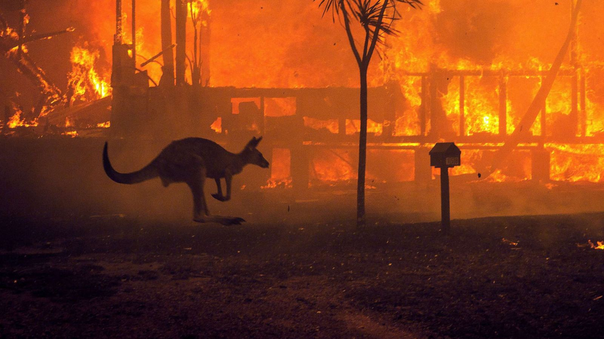

Climate Change
Will Apocalypse Become the New Normal?
What is climate change?
Climate change is one of the most complex issues facing us today. It involves many dimensions – science, economics, society, politics and moral and ethical questions – and is a global problem, felt on local scales, that will be around for decades and centuries to come. Carbon dioxide, the heat-trapping greenhouse gas that has driven recent global warming, lingers in the atmosphere for hundreds of years, and the planet (especially the oceans) takes a while to respond to warming. So even if we stopped emitting all greenhouse gases today, global warming and climate change will continue to affect future generations. In this way, humanity is “committed” to some level of climate change.
Responding to climate change involves two possible approaches: reducing and stabilizing the levels of heat-trapping greenhouse gases in the atmosphere (“mitigation”) and/or adapting to the climate change already in the pipeline (“adaptation”).
Polar bears (Ursus maritimus) are the poster child for the impacts of climate change on species, and justifiably so. To date, global warming has been most pronounced in the Arctic, and this trend is projected to continue. There are suggestions that before mid-century we could have a nearly ice-free Arctic in the summer. This increases the urgency with which we must act to reduce our greenhouse gas emissions to delay or avoid some of the worst consequences of climate change.
Australia's record-breaking 2019-20 bushfires were likely made worse by climate change, an inquiry has found, warning that such devastating wildfires are likely to happen again.There were 89 fire-generated firestorms -- extremely dangerous phenomena that cause lightning, tornadoes and extreme winds -- a 50% increase from the 2018-19 season.